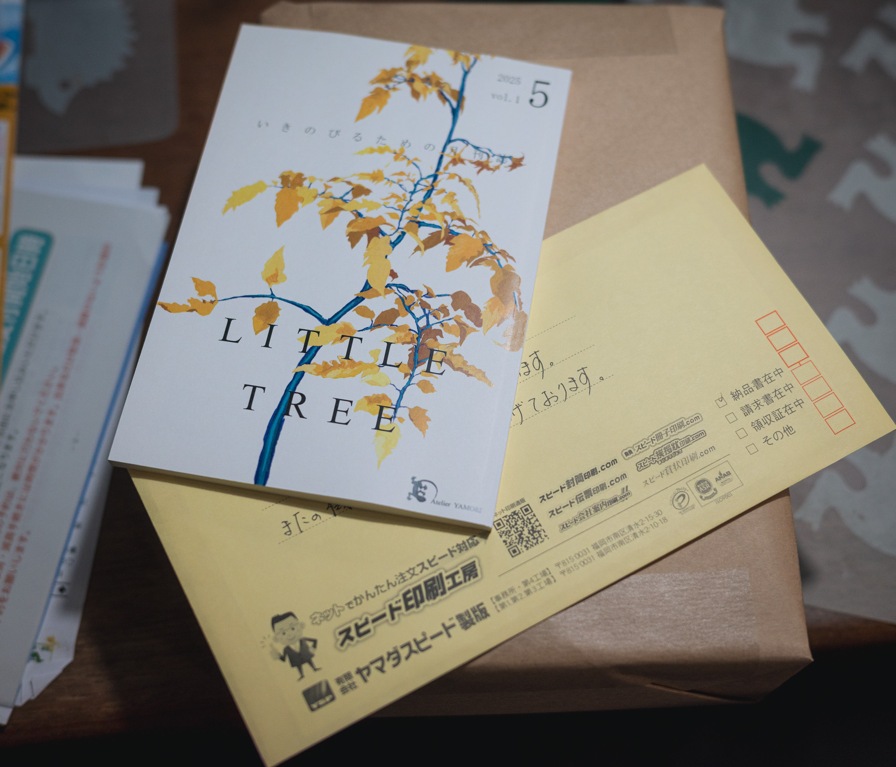
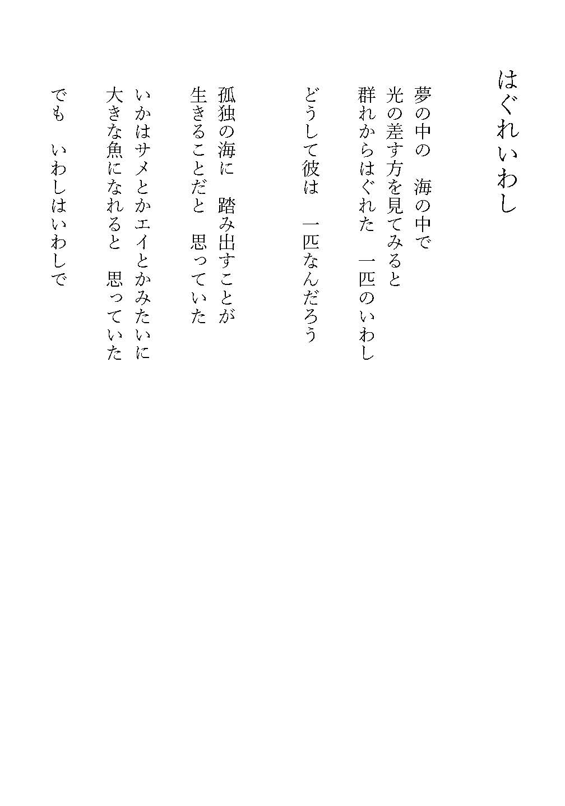
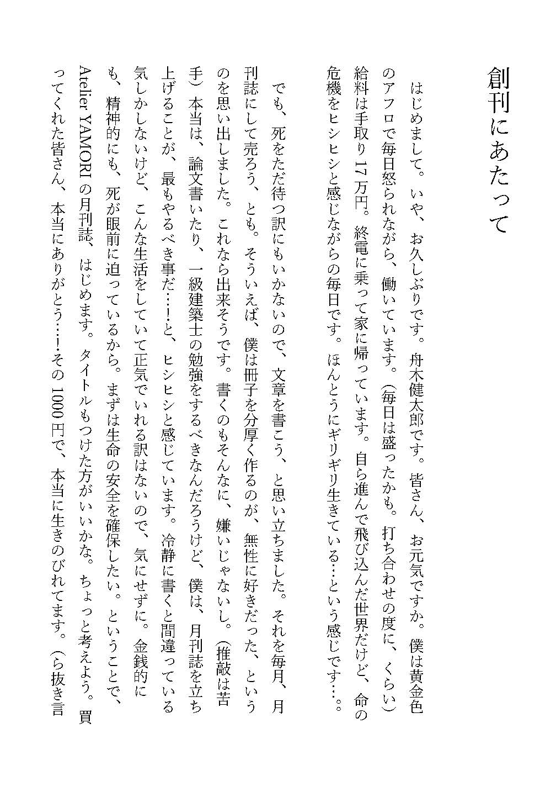
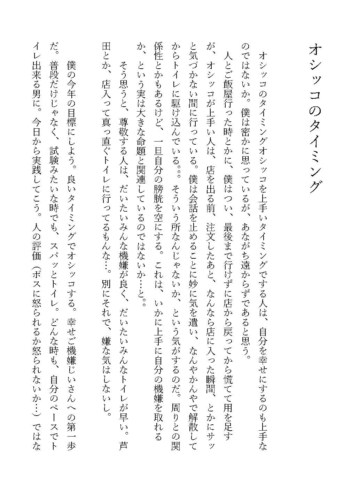
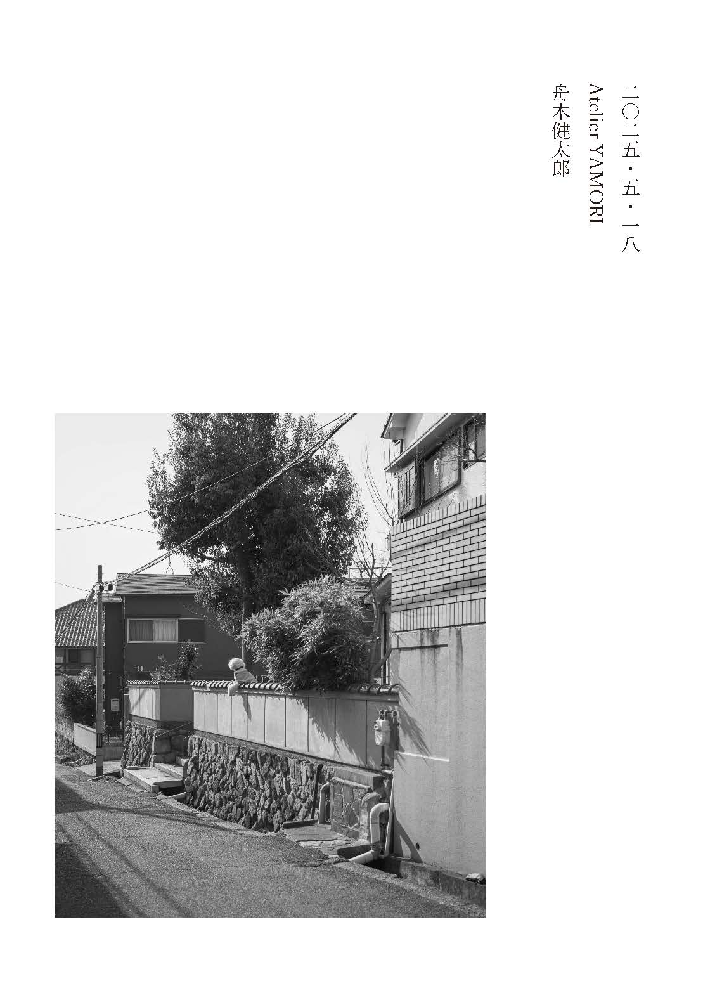

LITTLE TREE vol.1 (2025.5)
生きのびるための月刊誌。記念すべき創刊号。鬱が僕に書くという術を授けてくれた。ある日突然、書きたいと思い、その想いが一瞬たりとも尽きることはなかった。
大したことは書いていない。でも伝えたいという気持ちがむくむくと膨らんできて、売ってみたら売れた。創刊号は20部くらい。買ってくれた皆さん、ありがとう。
僕と柚ちゃんの最初で最後の共作。よりプレミア感が出てきているんじゃないだろうか。いつか復刊してもいい。何を書いたかは、全く覚えていない。
定価1000円(脱税)。自分の手で金を稼ぐという興奮。自分のつくった雑誌が段ボールいっぱいに送られてくる興奮。とにかく興奮してしまった。
ホームランに憑りつかれたホームランバッターのように、僕は書くこと、それを出版することに憑りつかれた。
［表紙：金子柚］






